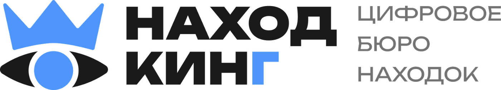
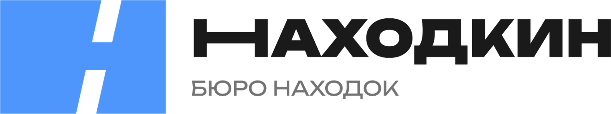
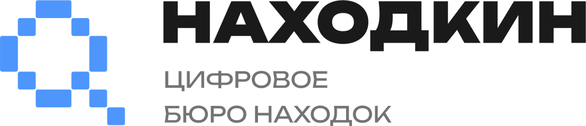
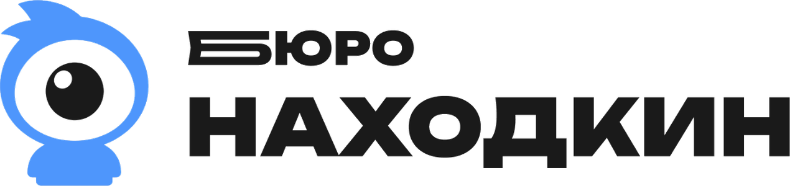
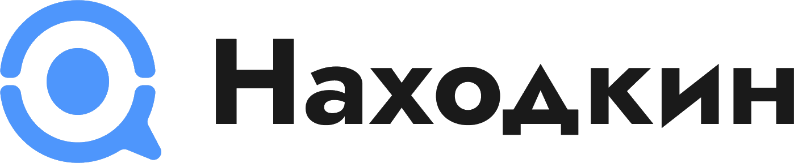

Бюро находок · сентябрь 2026
Пять знаков — пять обещаний сервиса
Слово «Находкин» зарегистрировать нельзя: в базе уже есть «Находка» и «Находкинский». Значит различительную способность надо откуда-то взять — и взять её можно в трёх разных местах.
Можно поменять само слово: «Находкинг» — это уже не «Находкин», и судьба в реестре у него своя. Можно перестроить букву: вытянутая «Н» перестаёт быть шрифтом и становится конструкцией. Можно построить фигуру, которая живёт без слова вообще. Пять вариантов ниже — это три разных ответа на один вопрос.
Знак не пересказывает услугу — этого не делает ни один сильный знак ни в категории, ни за её пределами. Слово объясняет, знак опознаёт. Поэтому по каждому варианту ниже сказано главное: какой характер он даёт бренду, как держится в мелком размере и в каком виде идёт на регистрацию.
Своя форма, а не шрифт
Буква, взятая из гарнитуры, неохраняема. Она должна быть либо перестроена, либо помещена в фигуру.
Не геометка
Прямой запрет из заключения поверенного: знак не должен читаться как метка Яндекс.Карт. Сплошная капля остриём вниз исключена; форма с разрывом контура — вопрос к экспертизе, и там, где он есть, это сказано отдельно.
Живёт на 16 пикселях
Фавикон, аватар, метка на карте. Половина прошлых вариантов не пережила именно эту проверку.
Держится в одну краску
Чёрным по белому и белым по чёрному. Цвет — сигнал, а не несущая конструкция.
Ирония и статус

Знак без слова
48 · 24 · 16 px
Что видит человек
Глаз в короне
Главный ход здесь не картинка, а слово. «Находкинг» — это уже не «Находкин»: другое слово, другая проверка в реестре и заодно готовая шутка. Всё остальное достраивается вокруг него: глаз означает, что сервис замечает, корона — что он в категории главный. Король и шут в одном лице: корона даёт и право быть первым, и право шутить.
Корона с глазом не пересказывает услугу — она задаёт тон. Тон тот же, в котором работают Авиасейлс и Бургер Кинг: сервис уверен в себе настолько, что может шутить. Из пяти вариантов этот даёт бренду голос, а не одну картинку.
- Различие
- Основной запас различительной способности лежит в изменённом слове, а не в фигуре. Сама связка «глаз + корона» в категории не занята никем, глаз построен геометрически, без лица и мимики.
- Масштаб
- На 16 px остаётся силуэт короны над тёмным овалом. Читается, но требует отдельной упрощённой версии для фавикона.
- Регистрация
- Единственный вариант, где имеет смысл подавать две заявки: изобразительную часть отдельно и слово отдельно. «Находкинг» не совпадает ни с «Находка», ни с «Находкинский» — у него есть шанс пройти как словесный знак, и это надо проверять первым делом.
Как это живёт
Кампания
Знак с характером обязан этот характер где-то тратить. Черновая серия: реплика от первого лица, плоское цветовое поле, персонаж, собранный из самого знака. Формат работает одинаково в ленте, на остановке и на борту транспорта — а транспорт здесь не для красоты: вещи теряют именно в нём. На остальных четырёх вариантах такой тон не соберётся — им нечем шутить.
Реклама на транспорте
Самый точный носитель из всех: вещи теряют именно в транспорте, и реклама попадает в человека ровно в ту секунду, когда он встаёт с сиденья. Борта, поручни и спинки — форматы, которые размещаются каждый день; макеты садятся на лекала перевозчика без переделки.
Институция

Знак без слова
48 · 24 · 16 px
Что видит человек
Буква Н в плашке
Прямой ответ на требование поверенного: буква живёт внутри фигуры, а не сама по себе. Здесь охраняется ровно то, что видно, — без допущений и без второго дна.
Диагональ не декоративная. Она вытягивает «Н» так, что литера перестаёт быть шрифтом и становится конструкцией, а сам просвет читается как дорога — короткий путь из точки в точку. Без слова знак работает как монограмма, и большего от монограммы не требуется: никакого объёма, глянца и скруглений, знак учреждения, которое ведёт учёт.
- Различие
- Создаётся формой плашки и углом просвета, а не буквой: буква сама по себе неохраняема. Здесь это перестаёт быть проблемой, потому что охраняется фигура целиком.
- Масштаб
- Две массы и один просвет. Ничего мельче основного штриха, поэтому работает без изменений от 16 px до вывески.
- Регистрация
- Самый чистый случай из пяти. Подаём плашку как изобразительный знак, слово идёт неохраняемым элементом — ровно та же схема, что у знака 65apps.
Как это живёт
Цифровое

Знак без слова
48 · 24 · 16 px
Что видит человек
Пиксельный знак
Здесь смысл несёт не силуэт, а материал. Знак собран из пикселей — и слово «цифровое» в дескрипторе становится необязательным, потому что оно уже сказано формой.
Силуэт при этом допускает несколько прочтений — поиск, метка, кольцо, — и это не слабость: узнают знак по способу сборки, а не по контуру. Тот же приём сразу даёт инструмент на всю айдентику: из этой сетки строятся иконки, паттерн, заставка, анимация. Ни один из остальных четырёх такого продолжения не даёт.
- Различие
- Держится на сетке: размер модуля, шаг, разрывы. Именно это предъявляется поверенному, потому что различает знак не контур, а способ его набора.
- Масштаб
- Ниже 24 px модули сливаются. Нужна вторая версия для фавикона — она строится из той же сетки, крупным шагом.
- Регистрация
- Подаём знак с обязательной фиксацией модульной сетки в описании: она и есть предмет охраны.
Как это живёт
Характер

Знак без слова
48 · 24 · 16 px
Что видит человек
Одноглазый персонаж
Это не иллюстрация к услуге, а её исполнитель. Персонаж почти целиком состоит из глаза: смотреть — единственное, что он умеет, и ровно это сервис и делает. Руки, ноги и причёска добавлены затем, чтобы глаз стал кем-то, а не остался иконкой.
Отличие от Находкинга здесь принципиальное. Там герой вырастает из знака в рекламе, но в самом логотипе его нет. Здесь персонаж и есть логотип: он живёт в шапке сайта, в фавиконе и на бирке, а не только на постере. При этом рта нет, лица нет, пропорции не детские — это герой, а не мультик.
- Различие
- Патентный поверенный отдельно отмечал, что персонажные знаки смешиваются с чужими меньше всего. Из пяти это самый защищённый вариант.
- Масштаб
- Глаз читается на 16 px, силуэт целиком — с 32 px. Краткая версия знака — один глаз без корпуса.
- Регистрация
- Подаём фигуру целиком, отдельной заявкой — глаз как краткую версию. Слово идёт неохраняемым элементом.
Как это живёт
Ёмкость

Знак без слова
48 · 24 · 16 px
Что видит человек
Четыре смысла в одной форме
Самый ёмкий знак из пяти. Одна форма честно держит четыре прочтения сразу — поиск, глаз, реплика в чате и точка на карте. То есть нашёл, увидел, связался, забрал: ровно тот путь, который человек проходит в сервисе, целиком уложенный в одну фигуру.
Плата за ёмкость — сдержанность. Строчное начертание убирает казённость, но голоса бренду не добавляет: этот знак работает, а не разговаривает. Зато он единственный, кто одинаково хорошо живёт иконкой приложения, меткой на карте и слепым тиснением на коже, не требуя ни второй версии, ни подстройки.
- Различие
- Пропорция кольца и короткий смещённый хвост. Хвост принципиально держать коротким: удлинится — форма начнёт читаться как геометка, а это прямой запрет.
- Масштаб
- Одна замкнутая масса и один крупный просвет — лучшая читаемость на 16 px из всех пяти. Версия для фавикона не нужна.
- Регистрация
- Подаём знак отдельно от слова. К поверенному идём с обоснованием, чем кольцо отличается и от лупы, и от метки, — здесь проверка будет самой придирчивой из пяти.
Как это живёт
Как выбирать
Вопрос не в том, какой знак нравится. Вопрос в том, с какой мыслью о сервисе вы согласны, — знак идёт следствием.
- Находкингмы в категории главные — и единственные, кто может себе позволить шутить
- Плашкаведём учёт, отвечаем за вещь, работаем как институция
- Пиксельмы цифровые насквозь — это видно по тому, из чего сделан знак
- Персонажза твоими вещами кто-то смотрит; у сервиса есть характер, а не только знак
- Кольцонашёл, увидел, связался, забрал — весь путь в одной форме